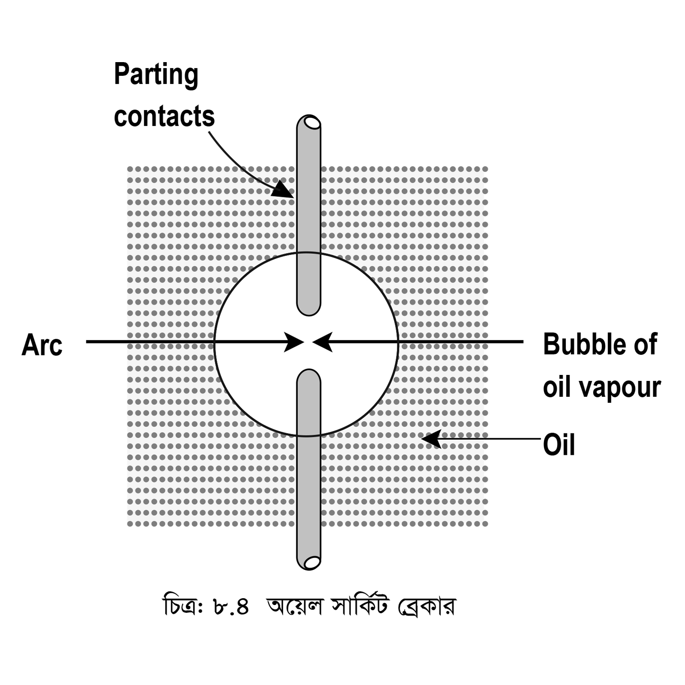
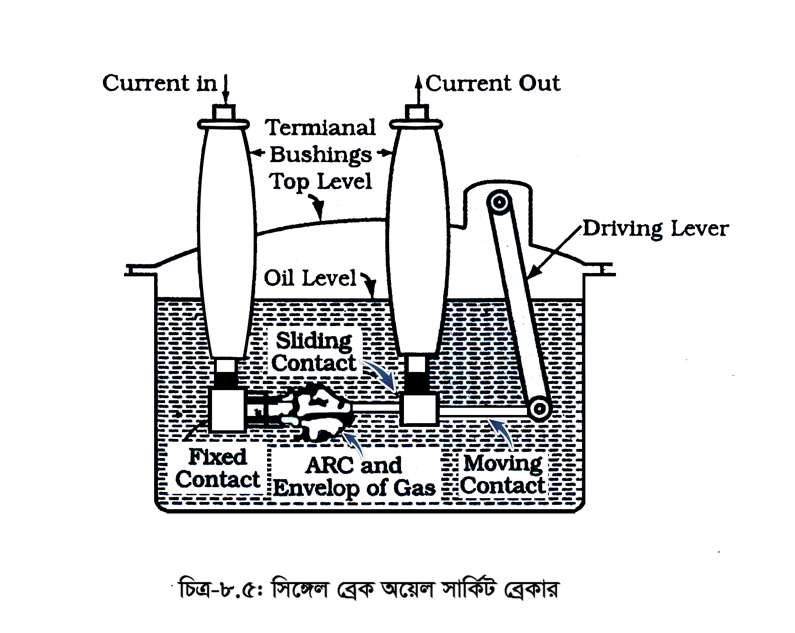

<div class="content">
    <div class="scroller">
        <p class="page-no">141</p><br><br>
        <h2></h2>

        <div>
            <p>
                ৪। আর্থ ফল্টের সময় রিকভারি ভোল্টেজ দুই কণ্টাক্ট পয়েন্টে সমভাবে বিভক্ত হয় না;
                <br>৫। এতে তেলের পরিমাণ বেশি থাকায় বেশি জায়গার প্রয়োজন হয় এবং ওজনও বেশি হয়;
                <br>৬। এর রক্ষণাবেক্ষণ করচ বেশি;
                <br>৭। শুধুমাত্র আউটডোরে স্থাপন করতে হয়;
                <br>৮। ব্যবহৃত তেলের গুণাগুণ নষ্ট হয়ে যেতে পারে, ফলে সমস্ত তেল বদলাতে হয়;
                <br>৯। খুব হাই স্পিডে কাজ করে না;
                <br>১০। খুব বেশি ভোল্টেজে ব্যবহৃত হয় না (১১ KV পর্যন্ত)।
            </p>
        </div>
        <div>
            <p><b>(খ) অয়েল সার্কিট ব্রেকার (Oil Circuit Breaker) :</b></p>
            <p>যে সার্কিট ব্রেকারে আর্ক নির্বাপণের মাধ্যম হিসেবে অর্থাৎ ডাই-ইলেকট্রিক (মেটিরিয়াল) হিসেবে বিশেষ ধরণের ডাই-ইলেকট্রিক তেল ব্যবহৃত হয়, তাকে অয়েল সার্কিট ব্রেকার বলে। </p>
            <p>বাল্ক অয়েল মাধ্যম 72.5 কিলোভোল্ট থেকে ২৪৫ কিলোভোল্ট লাইনে ব্যবহার করা হয়।</p>
            <p>আর্ক নির্বাপণের মাধ্যম হিসেবে তেলের সুবিধা-অসুবিধাসমূহ-</p>
            <p>তেল ভালো ইনসুলেটর হিসেবে কাজ করে বলে লাইভ (Live) কন্ডাক্টর এবং আর্থ কম্পোনেন্ট এর মাঝে দূরত্ব কম রাখা যায়। </p>
            <p class="c-align">
                
            </p>
            <p class="c-align">চিত্র: ৮.৪:
                <span class="tooltip_my">
                <i class="fa fa-play-circle video-class" videosrc="videos/141/6.2- ANIMATION Oil Circuit Breaker.mp4" style="font-size: 20px;" aria-hidden="true"></i>
                <span class="tooltiptext">click here to see the video</span>
            </span>
            </p>
        </div>
        <div>
            <p><b>ওয়েল সার্কিট ব্রেকার (Oil Circuit Breaker ): </b>অয়েল সার্কিট ব্রেকার দুই ধরণের হয়, যথা:</p>
            <p><b>(i)<span class="tooltip_my">সিঙ্গেল ব্রেক ওয়েল সার্কিট ব্রেকার:
								<span class="tooltiptext">
									<span class="alertText">
									</span>
									<audio controls class="audio">
										<source src="audio/141/141-1.mp3" type="audio/mpeg">
										Your browser does not support the audio element.
									</audio>
								</span>
							</span>
                </b> চিত্রে সিঙ্গেল ব্রেক অয়েল সার্কিট ব্রেকার দেখানো হলো। কারেন্ট প্রবেশ এবং নির্গমন টার্মিনাল বুশিং এর মারফতে হয়। এক্ষেত্রে বুশিং এর মধ্যস্থিত একটি ইলেকট্রোডে কারেন্ট প্রবেশ করে স্থির কণ্টাক্ট ও মুভিং কণ্টাক্ট হয়ে অন্য বুশিং এর মধ্যস্থিত ইলেকট্রোড দিয়ে বেরিয়ে যায়। ড্রাইভিং মেকানিজম চলমান কণ্টাক্টকে অপারেট করলে তখন একটিমাত্র পয়েন্ট ব্রেক করে বিধায় একে সিঙ্গেল ব্রেক অয়েল সার্কিট ব্রেকার বলা হয়। </p>

            <p class="c-align">
                
            </p>
        </div>
    </div>
</div>